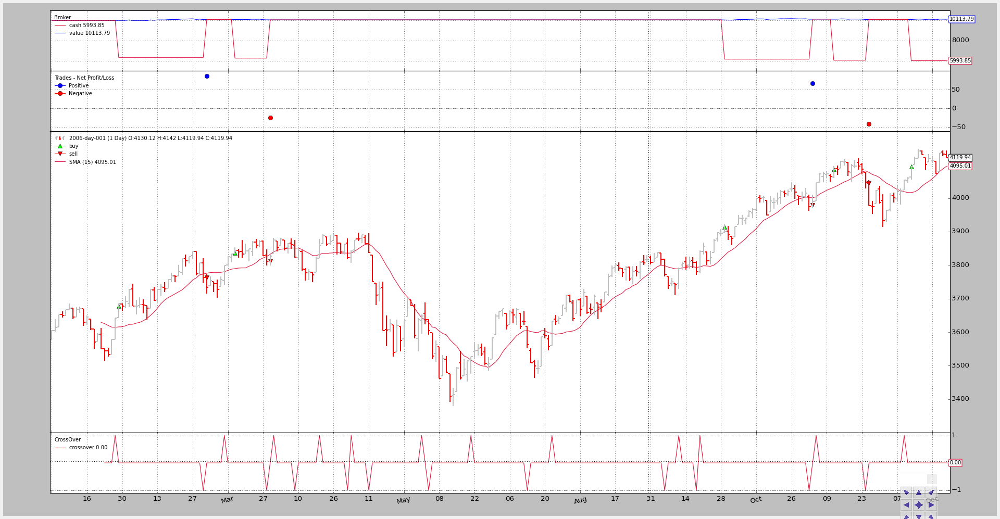

Order Management and Execution¶
Backtesting, and hence backtrader, would not be complete if orders could not
be simulated. To do so, the following is available in the platform.
For order management 3 primitives:
buysellcancel
Note
An update primitive is obviously something logic but common sense
dictates that such a method is mostly used by manual operators working with
a judgmental trading approach.
For order execution logic the following execution types:
MarketCloseLimitStopStopLimit
Order Management¶
The main goal is ease of use and therefore the most direct (and simple) way to do order management is from the strategy itself.
The buy and self primitives have the following signature as Strategy
methods:
def buy(self, data=None, size=None, price=None, plimit=None, exectype=None, valid=None):
def buy(self, data=None, size=None, price=None, exectype=None, valid=None)
data-> data feed reference which is the assed to buyIf
Noneis passed the main data of the strategy is used as the target
size-> int/long determining the stake to applyif
Noneis passed, theSizeravailable in the strategy will be used to automatically determine the stake. The defaultSizeruses a fixed state of 1
price-> will be ignored forMarketand can be left asNoneorders but must be a float for the other order types. If left asNonethe current closing price will be used
plimit-> limit price inStopLimitorders wherepricewill be used as the trigger priceIf left as
Nonethenpricewill be used as the limit (trigger and limit are the same)
exectype-> One of the order execution types. IfNoneis passed thenMarketwill be assumedThe execution types are enumerated in
Order. Example:Order.Limit
valid-> float value from date2num (or from the data feed) or a datetime.datetime Python objectNote: A
Marketorder will be executed regardless of thevalidparameterRETURN VALUE: an
Orderinstancedef sell(self, data=None, size=None, price=None, exectype=None, valid=None)
Because canceling an order just requires the order reference returned by
either buy or self, the primitive from the broker can be used (see below)
Some examples:
# buy the main date, with sizer default stake, Market order
order = self.buy()
# Market order - valid will be "IGNORED"
order = self.buy(valid=datetime.datetime.now() + datetime.timedelta(days=3))
# Market order - price will be IGNORED
order = self.buy(price=self.data.close[0] * 1.02)
# Market order - manual stake
order = self.buy(size=25)
# Limit order - want to set the price and can set a validity
order = self.buy(exectype=Order.Limit,
price=self.data.close[0] * 1.02,
valid=datetime.datetime.now() + datetime.timedelta(days=3)))
# StopLimit order - want to set the price, price limit
order = self.buy(exectype=Order.StopLimit,
price=self.data.close[0] * 1.02,
plimit=self.data.close[0] * 1.07)
# Canceling an existing order
self.broker.cancel(order)
Note
All order types can be create by creating an Order instance (or one of
its subclasses) and then passed to to the broker with:
order = self.broker.submit(order)
Note
There are buy and sell primitives in the broker itself, but they
are less forgiving with regards to default parameters.
Order Execution Logic¶
The broker uses 2 main guidelines (assumptions?) for order execution.
The current data has already happened and cannot be used to execcute an order.
If the logic in the strategy is something like:
if self.data.close > self.sma: # where sma is a Simple Moving Average self.buy() The expectation CANNOT be that the order will be executed with the ``close`` price which is being examined in the logic BECAUSE it has already happened. The order CAN BE 1st EXECUTED withing the bounds of the next set of Open/High/Low/Close price points (and the conditions set forth herein by the order)Volume does not play a role
It actually does in real trading if the trader goes for non-liquid assets or precisely the extremes (high/low) of a price bar are hit.
But hitting the high/low points is a seldom occurrence (if you do ... you don’t need
backtrader) and the chosen assets will have enough liquidity to absorb the orders of any regular trading
Market¶
Execution:
Opening price of the next set of Open/High/Low/Close prices (commonly referred as bar)
Rationale:
If the logic has executed at point X in time and issued aMarketorder, the next price spot that will happen is the upcomingopenprice
Note
This order executes always and disregards any price and valid
parameters used to create it
Close¶
Execution:
Using thecloseprice of the next barwhen the next bar actually CLOSES
Rationale:
Most backtesting feeds contain already closed bars and the order will execute immediately with the
closeprice of the next bar. A daily data feed is the most common example.But the system could be fed with “tick” prices and the actual bar (time/date wise) is being udpated constantly with the new ticks, without actually moving to the next bar (because time and/or date have not changed)
Only when the time or date changes, the bar has actually been closed and the order gets executed
Limit¶
Execution:
The
priceset at order creation if thedatatouches it, starting with the next price bar.The order will be canceled if
validis set and the time point is reached
Price Matching:
backtradertries to provide most realistic execution price forLimitorders.Using the 4 price spots (Open/High/Low/Close) it can be partially inferred if the requested
pricecan be improved.For
BuyOrders
Case 1:
If the
openprice of the bar is below the limit price the order executes immediately with theopenprice. The order has been swept during the opening phase of the sessionCase 2:
If the
openprice has not penetrated below the limit price but thelowprice is below the limit price, then the limit price has been seen during the session and the order can be executedThe logic is obviously inverted for
Sellorders.
Stop¶
Execution:
The trigger
priceset at order creation if thedatatouches it, starting with the next price bar.The order will be canceled if
validis set and the time point is reached
Price Matching:
backtradertries to provide most realistic trigger price forStoporders.Using the 4 price spots (Open/High/Low/Close) it can be partially inferred if the requested
pricecan be improved.For
`Stoporders whichBuy
Case 1:
If the
openprice of the bar is above the stop price the order is executed immediately with theopenprice.Intended to stop a loss if the price is moving upwards against an existing short position
Case 2:
If the
openprice has not penetrated above the stop price but thehighprice is above the stop price, then the stop price has been seen during the session and the order can be executedThe logic is obviously inverted for
Stoporders whichSell.
StopLimit¶
Execution:
The triggerpricesets the order in motion starting with the next price bar.
Price Matching:
- Trigger: Uses the
Stopmatching logic (but only triggers and turns the order into aLimitorder)- Limit: Uses the
Limitprice matching logic
Some samples¶
As always pictures (with code) are worth several million long explanations. Please note that the snippets concentrate on the order creation part. The full code is at the bottom.
A price closes above/below a simple moving average strategy will be used for the generation of the buy/sell signals
The signal is seen at the bottom of the charts: the CrossOver using the
crossover indicator.
A reference to generated “buy” orders will be kept to only allow one simultaneous order at most in the system.
Execution Type: Market¶
See in the chart how how the orders are executed one bar after the signal is generated with the opening price.
if self.p.exectype == 'Market':
self.buy(exectype=bt.Order.Market) # default if not given
self.log('BUY CREATE, exectype Market, price %.2f' %
self.data.close[0])
The output chart.
The command line and output:
$ ./order-execution-samples.py --exectype Market
2006-01-26T23:59:59+00:00, BUY CREATE, exectype Market, price 3641.42
2006-01-26T23:59:59+00:00, ORDER ACCEPTED/SUBMITTED
2006-01-27T23:59:59+00:00, BUY EXECUTED, Price: 3643.35, Cost: 3643.35, Comm 0.00
2006-03-02T23:59:59+00:00, SELL CREATE, 3763.73
2006-03-02T23:59:59+00:00, ORDER ACCEPTED/SUBMITTED
2006-03-03T23:59:59+00:00, SELL EXECUTED, Price: 3763.95, Cost: 3763.95, Comm 0.00
...
...
2006-12-11T23:59:59+00:00, BUY CREATE, exectype Market, price 4052.89
2006-12-11T23:59:59+00:00, ORDER ACCEPTED/SUBMITTED
2006-12-12T23:59:59+00:00, BUY EXECUTED, Price: 4052.55, Cost: 4052.55, Comm 0.00
Execution Type: Close¶
Updated on Aug 11, 2015
Following Issue #11 a development branch was created updating the chart and output. The wrong close price was being used.
Now the orders are also executed one bar after the signal but with the closing price.
elif self.p.exectype == 'Close':
self.buy(exectype=bt.Order.Close)
self.log('BUY CREATE, exectype Close, price %.2f' %
self.data.close[0])
The output chart.

The command line and output:
$ ./order-execution-samples.py --exectype Close
2006-01-26T23:59:59+00:00, BUY CREATE, exectype Close, price 3641.42
2006-01-26T23:59:59+00:00, ORDER ACCEPTED/SUBMITTED
2006-01-27T23:59:59+00:00, BUY EXECUTED, Price: 3685.48, Cost: 3685.48, Comm 0.00
2006-03-02T23:59:59+00:00, SELL CREATE, 3763.73
2006-03-02T23:59:59+00:00, ORDER ACCEPTED/SUBMITTED
2006-03-03T23:59:59+00:00, SELL EXECUTED, Price: 3763.95, Cost: 3763.95, Comm 0.00
...
...
2006-11-06T23:59:59+00:00, BUY CREATE, exectype Close, price 4045.22
2006-11-06T23:59:59+00:00, ORDER ACCEPTED/SUBMITTED
2006-11-07T23:59:59+00:00, BUY EXECUTED, Price: 4072.86, Cost: 4072.86, Comm 0.00
2006-11-24T23:59:59+00:00, SELL CREATE, 4048.16
2006-11-24T23:59:59+00:00, ORDER ACCEPTED/SUBMITTED
2006-11-27T23:59:59+00:00, SELL EXECUTED, Price: 4045.05, Cost: 4045.05, Comm 0.00
2006-12-11T23:59:59+00:00, BUY CREATE, exectype Close, price 4052.89
2006-12-11T23:59:59+00:00, ORDER ACCEPTED/SUBMITTED
2006-12-12T23:59:59+00:00, BUY EXECUTED, Price: 4059.74, Cost: 4059.74, Comm 0.00
Execution Type: Limit¶
Validity is being calculated some lines before in case it has been passed as argument.
if self.p.valid:
valid = self.data.datetime.date(0) + \
datetime.timedelta(days=self.p.valid)
else:
valid = None
A limit price 1% below the signal generation price (the close at the signal bar) is set. Notice how this prevents many from the orders above from being executed.
elif self.p.exectype == 'Limit':
price = self.data.close * (1.0 - self.p.perc1 / 100.0)
self.buy(exectype=bt.Order.Limit, price=price, valid=valid)
if self.p.valid:
txt = 'BUY CREATE, exectype Limit, price %.2f, valid: %s'
self.log(txt % (price, valid.strftime('%Y-%m-%d')))
else:
txt = 'BUY CREATE, exectype Limit, price %.2f'
self.log(txt % price)
The output chart.

Just 4 orders have been issued. Limiting the price trying to catch a small dip has completly changed the output.
The command line and output:
$ ./order-execution-samples.py --exectype Limit --perc1 1
2006-01-26T23:59:59+00:00, BUY CREATE, exectype Limit, price 3605.01
2006-01-26T23:59:59+00:00, ORDER ACCEPTED/SUBMITTED
2006-05-18T23:59:59+00:00, BUY EXECUTED, Price: 3605.01, Cost: 3605.01, Comm 0.00
2006-06-05T23:59:59+00:00, SELL CREATE, 3604.33
2006-06-05T23:59:59+00:00, ORDER ACCEPTED/SUBMITTED
2006-06-06T23:59:59+00:00, SELL EXECUTED, Price: 3598.58, Cost: 3598.58, Comm 0.00
2006-06-21T23:59:59+00:00, BUY CREATE, exectype Limit, price 3491.57
2006-06-21T23:59:59+00:00, ORDER ACCEPTED/SUBMITTED
2006-06-28T23:59:59+00:00, BUY EXECUTED, Price: 3491.57, Cost: 3491.57, Comm 0.00
2006-07-13T23:59:59+00:00, SELL CREATE, 3562.56
2006-07-13T23:59:59+00:00, ORDER ACCEPTED/SUBMITTED
2006-07-14T23:59:59+00:00, SELL EXECUTED, Price: 3545.92, Cost: 3545.92, Comm 0.00
2006-07-24T23:59:59+00:00, BUY CREATE, exectype Limit, price 3596.60
2006-07-24T23:59:59+00:00, ORDER ACCEPTED/SUBMITTED
Execution Type: Limit with validity¶
To not wait forever on a limit order which may only execute when the price is moving against the “buy” order, the order will only be valid 4 (calendar) days.
The output chart.

More orders have been generated, but all but one “buy” order expired, further limiting the amount of operations.
The command line and output:
$ ./order-execution-samples.py --exectype Limit --perc1 1 --valid 4
2006-01-26T23:59:59+00:00, BUY CREATE, exectype Limit, price 3605.01, valid: 2006-01-30
2006-01-26T23:59:59+00:00, ORDER ACCEPTED/SUBMITTED
2006-01-30T23:59:59+00:00, BUY EXPIRED
2006-03-10T23:59:59+00:00, BUY CREATE, exectype Limit, price 3760.48, valid: 2006-03-14
2006-03-10T23:59:59+00:00, ORDER ACCEPTED/SUBMITTED
2006-03-14T23:59:59+00:00, BUY EXPIRED
2006-03-30T23:59:59+00:00, BUY CREATE, exectype Limit, price 3835.86, valid: 2006-04-03
2006-03-30T23:59:59+00:00, ORDER ACCEPTED/SUBMITTED
2006-04-03T23:59:59+00:00, BUY EXPIRED
2006-04-20T23:59:59+00:00, BUY CREATE, exectype Limit, price 3821.40, valid: 2006-04-24
2006-04-20T23:59:59+00:00, ORDER ACCEPTED/SUBMITTED
2006-04-24T23:59:59+00:00, BUY EXPIRED
2006-05-04T23:59:59+00:00, BUY CREATE, exectype Limit, price 3804.65, valid: 2006-05-08
2006-05-04T23:59:59+00:00, ORDER ACCEPTED/SUBMITTED
2006-05-08T23:59:59+00:00, BUY EXPIRED
2006-06-01T23:59:59+00:00, BUY CREATE, exectype Limit, price 3611.85, valid: 2006-06-05
2006-06-01T23:59:59+00:00, ORDER ACCEPTED/SUBMITTED
2006-06-05T23:59:59+00:00, BUY EXPIRED
2006-06-21T23:59:59+00:00, BUY CREATE, exectype Limit, price 3491.57, valid: 2006-06-25
2006-06-21T23:59:59+00:00, ORDER ACCEPTED/SUBMITTED
2006-06-26T23:59:59+00:00, BUY EXPIRED
2006-07-24T23:59:59+00:00, BUY CREATE, exectype Limit, price 3596.60, valid: 2006-07-28
2006-07-24T23:59:59+00:00, ORDER ACCEPTED/SUBMITTED
2006-07-28T23:59:59+00:00, BUY EXPIRED
2006-09-12T23:59:59+00:00, BUY CREATE, exectype Limit, price 3751.07, valid: 2006-09-16
2006-09-12T23:59:59+00:00, ORDER ACCEPTED/SUBMITTED
2006-09-18T23:59:59+00:00, BUY EXPIRED
2006-09-20T23:59:59+00:00, BUY CREATE, exectype Limit, price 3802.90, valid: 2006-09-24
2006-09-20T23:59:59+00:00, ORDER ACCEPTED/SUBMITTED
2006-09-22T23:59:59+00:00, BUY EXECUTED, Price: 3802.90, Cost: 3802.90, Comm 0.00
2006-11-02T23:59:59+00:00, SELL CREATE, 3974.62
2006-11-02T23:59:59+00:00, ORDER ACCEPTED/SUBMITTED
2006-11-03T23:59:59+00:00, SELL EXECUTED, Price: 3979.73, Cost: 3979.73, Comm 0.00
2006-11-06T23:59:59+00:00, BUY CREATE, exectype Limit, price 4004.77, valid: 2006-11-10
2006-11-06T23:59:59+00:00, ORDER ACCEPTED/SUBMITTED
2006-11-10T23:59:59+00:00, BUY EXPIRED
2006-12-11T23:59:59+00:00, BUY CREATE, exectype Limit, price 4012.36, valid: 2006-12-15
2006-12-11T23:59:59+00:00, ORDER ACCEPTED/SUBMITTED
2006-12-15T23:59:59+00:00, BUY EXPIRED
Execution Type: Stop¶
A stop price 1% above the signal price is set. That means that the strategy only buys if the signal is generated and the price continues climbing up, which could be intrepreted as a signal of strength.
This completely alters the execution panorama.
elif self.p.exectype == 'Stop':
price = self.data.close * (1.0 + self.p.perc1 / 100.0)
self.buy(exectype=bt.Order.Stop, price=price, valid=valid)
if self.p.valid:
txt = 'BUY CREATE, exectype Stop, price %.2f, valid: %s'
self.log(txt % (price, valid.strftime('%Y-%m-%d')))
else:
txt = 'BUY CREATE, exectype Stop, price %.2f'
self.log(txt % price)
The output chart.
The command line and output:
$ ./order-execution-samples.py --exectype Stop --perc1 1
2006-01-26T23:59:59+00:00, BUY CREATE, exectype Stop, price 3677.83
2006-01-26T23:59:59+00:00, ORDER ACCEPTED/SUBMITTED
2006-01-27T23:59:59+00:00, BUY EXECUTED, Price: 3677.83, Cost: 3677.83, Comm 0.00
2006-03-02T23:59:59+00:00, SELL CREATE, 3763.73
2006-03-02T23:59:59+00:00, ORDER ACCEPTED/SUBMITTED
2006-03-03T23:59:59+00:00, SELL EXECUTED, Price: 3763.95, Cost: 3763.95, Comm 0.00
2006-03-10T23:59:59+00:00, BUY CREATE, exectype Stop, price 3836.44
2006-03-10T23:59:59+00:00, ORDER ACCEPTED/SUBMITTED
2006-03-15T23:59:59+00:00, BUY EXECUTED, Price: 3836.44, Cost: 3836.44, Comm 0.00
2006-03-28T23:59:59+00:00, SELL CREATE, 3811.45
2006-03-28T23:59:59+00:00, ORDER ACCEPTED/SUBMITTED
2006-03-29T23:59:59+00:00, SELL EXECUTED, Price: 3811.85, Cost: 3811.85, Comm 0.00
2006-03-30T23:59:59+00:00, BUY CREATE, exectype Stop, price 3913.36
2006-03-30T23:59:59+00:00, ORDER ACCEPTED/SUBMITTED
2006-09-29T23:59:59+00:00, BUY EXECUTED, Price: 3913.36, Cost: 3913.36, Comm 0.00
2006-11-02T23:59:59+00:00, SELL CREATE, 3974.62
2006-11-02T23:59:59+00:00, ORDER ACCEPTED/SUBMITTED
2006-11-03T23:59:59+00:00, SELL EXECUTED, Price: 3979.73, Cost: 3979.73, Comm 0.00
2006-11-06T23:59:59+00:00, BUY CREATE, exectype Stop, price 4085.67
2006-11-06T23:59:59+00:00, ORDER ACCEPTED/SUBMITTED
2006-11-13T23:59:59+00:00, BUY EXECUTED, Price: 4085.67, Cost: 4085.67, Comm 0.00
2006-11-24T23:59:59+00:00, SELL CREATE, 4048.16
2006-11-24T23:59:59+00:00, ORDER ACCEPTED/SUBMITTED
2006-11-27T23:59:59+00:00, SELL EXECUTED, Price: 4045.05, Cost: 4045.05, Comm 0.00
2006-12-11T23:59:59+00:00, BUY CREATE, exectype Stop, price 4093.42
2006-12-11T23:59:59+00:00, ORDER ACCEPTED/SUBMITTED
2006-12-13T23:59:59+00:00, BUY EXECUTED, Price: 4093.42, Cost: 4093.42, Comm 0.00
Execution Type: StopLimit¶
A stop price 1% above the signal price is set. But the limit price is set 0.5% above the signal (close) price which could be interpreted as: wait for the strength to show up but do not buy the peak. Wait for a dip.
Validity is capped at 20 (calendar) days
elif self.p.exectype == 'StopLimit':
price = self.data.close * (1.0 + self.p.perc1 / 100.0)
plimit = self.data.close * (1.0 + self.p.perc2 / 100.0)
self.buy(exectype=bt.Order.StopLimit, price=price, valid=valid,
plimit=plimit)
if self.p.valid:
txt = ('BUY CREATE, exectype StopLimit, price %.2f,'
' valid: %s, pricelimit: %.2f')
self.log(txt % (price, valid.strftime('%Y-%m-%d'), plimit))
else:
txt = ('BUY CREATE, exectype StopLimit, price %.2f,'
' pricelimit: %.2f')
self.log(txt % (price, plimit))
The output chart.

The command line and output:
$ ./order-execution-samples.py --exectype StopLimit --perc1 1 --perc2 0.5 --valid 20
2006-01-26T23:59:59+00:00, BUY CREATE, exectype StopLimit, price 3677.83, valid: 2006-02-15, pricelimit: 3659.63
2006-01-26T23:59:59+00:00, ORDER ACCEPTED/SUBMITTED
2006-02-03T23:59:59+00:00, BUY EXECUTED, Price: 3659.63, Cost: 3659.63, Comm 0.00
2006-03-02T23:59:59+00:00, SELL CREATE, 3763.73
2006-03-02T23:59:59+00:00, ORDER ACCEPTED/SUBMITTED
2006-03-03T23:59:59+00:00, SELL EXECUTED, Price: 3763.95, Cost: 3763.95, Comm 0.00
2006-03-10T23:59:59+00:00, BUY CREATE, exectype StopLimit, price 3836.44, valid: 2006-03-30, pricelimit: 3817.45
2006-03-10T23:59:59+00:00, ORDER ACCEPTED/SUBMITTED
2006-03-21T23:59:59+00:00, BUY EXECUTED, Price: 3817.45, Cost: 3817.45, Comm 0.00
2006-03-28T23:59:59+00:00, SELL CREATE, 3811.45
2006-03-28T23:59:59+00:00, ORDER ACCEPTED/SUBMITTED
2006-03-29T23:59:59+00:00, SELL EXECUTED, Price: 3811.85, Cost: 3811.85, Comm 0.00
2006-03-30T23:59:59+00:00, BUY CREATE, exectype StopLimit, price 3913.36, valid: 2006-04-19, pricelimit: 3893.98
2006-03-30T23:59:59+00:00, ORDER ACCEPTED/SUBMITTED
2006-04-19T23:59:59+00:00, BUY EXPIRED
...
...
2006-12-11T23:59:59+00:00, BUY CREATE, exectype StopLimit, price 4093.42, valid: 2006-12-31, pricelimit: 4073.15
2006-12-11T23:59:59+00:00, ORDER ACCEPTED/SUBMITTED
2006-12-22T23:59:59+00:00, BUY EXECUTED, Price: 4073.15, Cost: 4073.15, Comm 0.00
Test Script Execution¶
Detailed in the command line help:
$ ./order-execution-samples.py --help
usage: order-execution-samples.py [-h] [--infile INFILE]
[--csvformat {bt,visualchart,sierrachart,yahoo,yahoo_unreversed}]
[--fromdate FROMDATE] [--todate TODATE]
[--plot] [--plotstyle {bar,line,candle}]
[--numfigs NUMFIGS] [--smaperiod SMAPERIOD]
[--exectype EXECTYPE] [--valid VALID]
[--perc1 PERC1] [--perc2 PERC2]
Showcase for Order Execution Types
optional arguments:
-h, --help show this help message and exit
--infile INFILE, -i INFILE
File to be read in
--csvformat {bt,visualchart,sierrachart,yahoo,yahoo_unreversed},
-c {bt,visualchart,sierrachart,yahoo,yahoo_unreversed}
CSV Format
--fromdate FROMDATE, -f FROMDATE
Starting date in YYYY-MM-DD format
--todate TODATE, -t TODATE
Ending date in YYYY-MM-DD format
--plot, -p Plot the read data
--plotstyle {bar,line,candle}, -ps {bar,line,candle}
Plot the read data
--numfigs NUMFIGS, -n NUMFIGS
Plot using n figures
--smaperiod SMAPERIOD, -s SMAPERIOD
Simple Moving Average Period
--exectype EXECTYPE, -e EXECTYPE
Execution Type: Market (default), Close, Limit,
Stop, StopLimit
--valid VALID, -v VALID
Validity for Limit sample: default 0 days
--perc1 PERC1, -p1 PERC1
% distance from close price at order creation time for
the limit/trigger price in Limit/Stop orders
--perc2 PERC2, -p2 PERC2
% distance from close price at order creation time for
the limit price in StopLimit orders
The full code¶
from __future__ import (absolute_import, division, print_function,
unicode_literals)
import argparse
import datetime
import os.path
import time
import sys
import backtrader as bt
import backtrader.feeds as btfeeds
import backtrader.indicators as btind
class OrderExecutionStrategy(bt.Strategy):
params = (
('smaperiod', 15),
('exectype', 'Market'),
('perc1', 3),
('perc2', 1),
('valid', 4),
)
def log(self, txt, dt=None):
''' Logging function fot this strategy'''
dt = dt or self.data.datetime[0]
if isinstance(dt, float):
dt = bt.num2date(dt)
print('%s, %s' % (dt.isoformat(), txt))
def notify_order(self, order):
if order.status in [order.Submitted, order.Accepted]:
# Buy/Sell order submitted/accepted to/by broker - Nothing to do
self.log('ORDER ACCEPTED/SUBMITTED', dt=order.created.dt)
self.order = order
return
if order.status in [order.Expired]:
self.log('BUY EXPIRED')
elif order.status in [order.Completed]:
if order.isbuy():
self.log(
'BUY EXECUTED, Price: %.2f, Cost: %.2f, Comm %.2f' %
(order.executed.price,
order.executed.value,
order.executed.comm))
else: # Sell
self.log('SELL EXECUTED, Price: %.2f, Cost: %.2f, Comm %.2f' %
(order.executed.price,
order.executed.value,
order.executed.comm))
# Sentinel to None: new orders allowed
self.order = None
def __init__(self):
# SimpleMovingAverage on main data
# Equivalent to -> sma = btind.SMA(self.data, period=self.p.smaperiod)
sma = btind.SMA(period=self.p.smaperiod)
# CrossOver (1: up, -1: down) close / sma
self.buysell = btind.CrossOver(self.data.close, sma, plot=True)
# Sentinel to None: new ordersa allowed
self.order = None
def next(self):
if self.order:
# An order is pending ... nothing can be done
return
# Check if we are in the market
if self.position:
# In the maerket - check if it's the time to sell
if self.buysell < 0:
self.log('SELL CREATE, %.2f' % self.data.close[0])
self.sell()
elif self.buysell > 0:
if self.p.valid:
valid = self.data.datetime.date(0) + \
datetime.timedelta(days=self.p.valid)
else:
valid = None
# Not in the market and signal to buy
if self.p.exectype == 'Market':
self.buy(exectype=bt.Order.Market) # default if not given
self.log('BUY CREATE, exectype Market, price %.2f' %
self.data.close[0])
elif self.p.exectype == 'Close':
self.buy(exectype=bt.Order.Close)
self.log('BUY CREATE, exectype Close, price %.2f' %
self.data.close[0])
elif self.p.exectype == 'Limit':
price = self.data.close * (1.0 - self.p.perc1 / 100.0)
self.buy(exectype=bt.Order.Limit, price=price, valid=valid)
if self.p.valid:
txt = 'BUY CREATE, exectype Limit, price %.2f, valid: %s'
self.log(txt % (price, valid.strftime('%Y-%m-%d')))
else:
txt = 'BUY CREATE, exectype Limit, price %.2f'
self.log(txt % price)
elif self.p.exectype == 'Stop':
price = self.data.close * (1.0 + self.p.perc1 / 100.0)
self.buy(exectype=bt.Order.Stop, price=price, valid=valid)
if self.p.valid:
txt = 'BUY CREATE, exectype Stop, price %.2f, valid: %s'
self.log(txt % (price, valid.strftime('%Y-%m-%d')))
else:
txt = 'BUY CREATE, exectype Stop, price %.2f'
self.log(txt % price)
elif self.p.exectype == 'StopLimit':
price = self.data.close * (1.0 + self.p.perc1 / 100.0)
plimit = self.data.close * (1.0 + self.p.perc2 / 100.0)
self.buy(exectype=bt.Order.StopLimit, price=price, valid=valid,
plimit=plimit)
if self.p.valid:
txt = ('BUY CREATE, exectype StopLimit, price %.2f,'
' valid: %s, pricelimit: %.2f')
self.log(txt % (price, valid.strftime('%Y-%m-%d'), plimit))
else:
txt = ('BUY CREATE, exectype StopLimit, price %.2f,'
' pricelimit: %.2f')
self.log(txt % (price, plimit))
def runstrat():
args = parse_args()
cerebro = bt.Cerebro()
data = getdata(args)
cerebro.adddata(data)
cerebro.addstrategy(
OrderExecutionStrategy,
exectype=args.exectype,
perc1=args.perc1,
perc2=args.perc2,
valid=args.valid,
smaperiod=args.smaperiod
)
cerebro.run()
if args.plot:
cerebro.plot(numfigs=args.numfigs, style=args.plotstyle)
def getdata(args):
dataformat = dict(
bt=btfeeds.BacktraderCSVData,
visualchart=btfeeds.VChartCSVData,
sierrachart=btfeeds.SierraChartCSVData,
yahoo=btfeeds.YahooFinanceCSVData,
yahoo_unreversed=btfeeds.YahooFinanceCSVData
)
dfkwargs = dict()
if args.csvformat == 'yahoo_unreversed':
dfkwargs['reverse'] = True
if args.fromdate:
fromdate = datetime.datetime.strptime(args.fromdate, '%Y-%m-%d')
dfkwargs['fromdate'] = fromdate
if args.todate:
fromdate = datetime.datetime.strptime(args.todate, '%Y-%m-%d')
dfkwargs['todate'] = todate
dfkwargs['dataname'] = args.infile
dfcls = dataformat[args.csvformat]
return dfcls(**dfkwargs)
def parse_args():
parser = argparse.ArgumentParser(
description='Showcase for Order Execution Types')
parser.add_argument('--infile', '-i', required=False,
default='../datas/2006-day-001.txt',
help='File to be read in')
parser.add_argument('--csvformat', '-c', required=False, default='bt',
choices=['bt', 'visualchart', 'sierrachart',
'yahoo', 'yahoo_unreversed'],
help='CSV Format')
parser.add_argument('--fromdate', '-f', required=False, default=None,
help='Starting date in YYYY-MM-DD format')
parser.add_argument('--todate', '-t', required=False, default=None,
help='Ending date in YYYY-MM-DD format')
parser.add_argument('--plot', '-p', action='store_false', required=False,
help='Plot the read data')
parser.add_argument('--plotstyle', '-ps', required=False, default='bar',
choices=['bar', 'line', 'candle'],
help='Plot the read data')
parser.add_argument('--numfigs', '-n', required=False, default=1,
help='Plot using n figures')
parser.add_argument('--smaperiod', '-s', required=False, default=15,
help='Simple Moving Average Period')
parser.add_argument('--exectype', '-e', required=False, default='Market',
help=('Execution Type: Market (default), Close, Limit,'
' Stop, StopLimit'))
parser.add_argument('--valid', '-v', required=False, default=0, type=int,
help='Validity for Limit sample: default 0 days')
parser.add_argument('--perc1', '-p1', required=False, default=0.0,
type=float,
help=('%% distance from close price at order creation'
' time for the limit/trigger price in Limit/Stop'
' orders'))
parser.add_argument('--perc2', '-p2', required=False, default=0.0,
type=float,
help=('%% distance from close price at order creation'
' time for the limit price in StopLimit orders'))
return parser.parse_args()
if __name__ == '__main__':
runstrat()


{kind=link}
{kind=link}